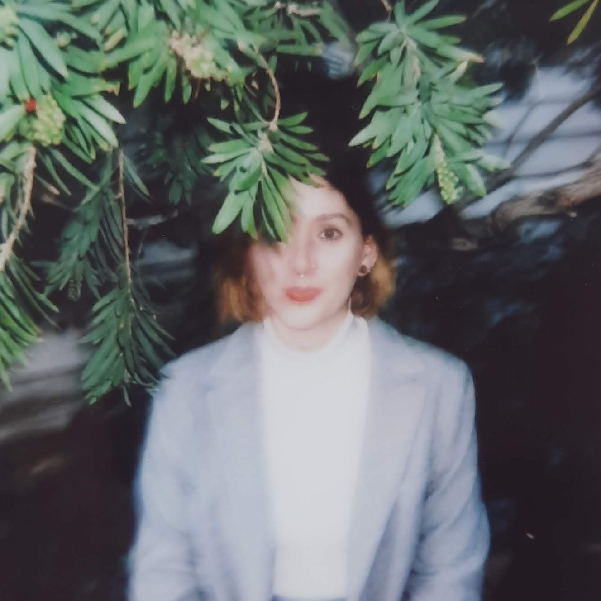

Ana Soto Zaleska
BELOW THE CLOUD
Writing about data centres, power, and the case for democratic accountability from Zaragoza, Spain.
Substack
LinkedIn
This page is a threshold, not a dashboard.
☀️ Light